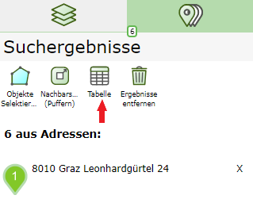
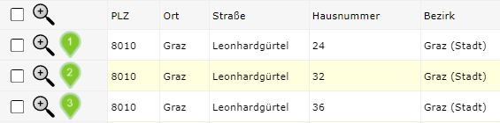
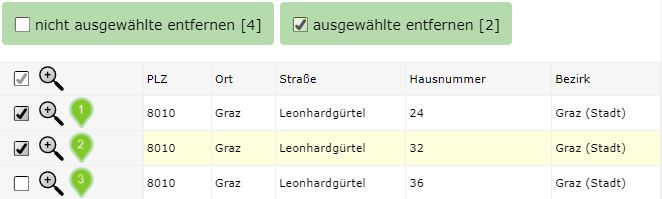
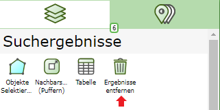
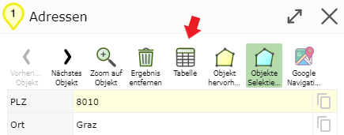
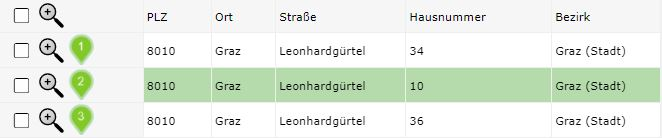
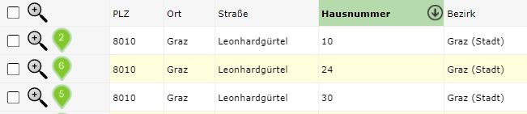

Build 3.0.4002 (2020-10-01)
Results Table
After a search or query, the results are first shown in the results list. Clicking on a result there shows the details of this geo-object in a dialog. Alternatively, the results can also be shown in a table with all fields. The table can be reached via the search results area, where the results list is also found:

The table offers tools that apply to all results, for example Export as CSV for MS Excel.
As of Build 3.0.4002, the table additionally offers the following functions:
In the first column, additional buttons (checkbox and magnifying glass) are offered.

Using the checkbox, individual rows can be selected. This can be used to remove results from the list. If you select rows, further buttons appear above the table, to delete marked or un- marked rows:

After removing the rows, the corresponding markers are also removed from the map.
Note
There is also a checkbox in the header row of the table. This can be used to toggle all checkboxes of the individual rows.
Note
The two remove buttons only appear when at least one row has been selected. However, the buttons also disappear if all rows are selected, since it is not possible to delete all rows of a query. If you want to remove all results, this can be done, for example, via the Remove Results button in the search results area:

The magnifying glass icon is used to zoom the map to the area of the corresponding geo-object.
Note
The magnifying glass icon is also found in the header row of the table. This causes the map to zoom to an area containing all query results.
When zooming via the magnifying glass icon, the table remains open. The default behavior of the table is that clicking on a row also zooms to the geo-object. However, here the table is closed and the detail results for this geo-object are shown.
The detail results offer additional tools for this geo-object (e.g. navigation, filter, etc.). New here is that a tool is now also offered for detail results, to jump directly to the table view:

If you open the table from a detail result dialog of a geo-object, the table jumps to the corresponding row and shows it marked:

Note: The table can also be sorted by one or more columns. To do this, click on the corresponding heading(s).
Click: sort by this column
Click: reverse sort order
Click: remove sorting
